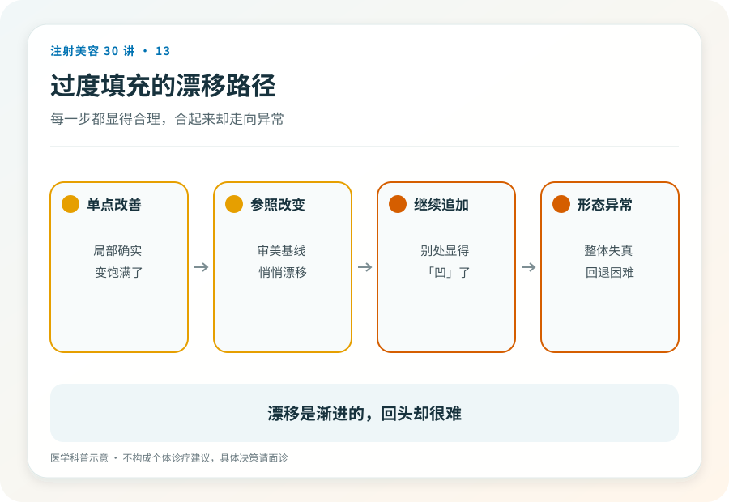

消费者决策工具
“我就是法令纹深，填平不就行了？”
这句话把面部当成了需要腻子的墙面，哪里凹陷补哪里。很多不满意的结果，僵硬感、假面感、越打越奇怪的“馒化”，正是从这个模型开始的。
01帐篷与撑杆
面部更接近一顶帐篷，表面的形态由深层的支撑结构决定。你看到的褶皱，可能不是布料本身的问题，而是某根撑杆的位置变了。
面部凹陷往往是容量流失、支撑结构变化和软组织移位的综合结果。法令纹加深，可能与中面部的容量和支撑变化有关；直接往褶皱里填料，褶皱未必消失，脸却先厚了一层。
好的填充方案处理的是“为什么凹”，而不是“哪里凹”。这决定了材料该放在哪个区域、哪个层次，有时甚至决定了该不该用填充来解决。

02“馒化”是决策结构问题
“馒化”不是某一针打坏了，而是一种累积路径，每次对着镜子找到一个不满意的点，每次针对那个点追加一点。每一次都不算错，总和是一张失去结构的脸。
它的根源是决策结构，由不满意点驱动、逐坑填补、没有人对整体负责。这也解释了为什么换了好几家机构、每家都“只打了一点”的人，最容易走到这一步。没有任何一个医生看过全局。
03你无法自己做评估，但能识别“有没有评估”
面部评估需要专业训练，消费者做不了。但你完全可以识别面诊里有没有评估发生。
有评估的面诊，医生先看整体（不只是你指的那个位置）、讨论成因、解释为什么方案是这个区域这个思路，并且主动谈“不打”和“少打”的选项。
没有评估的面诊，按部位报价（“法令纹一支、泪沟一支”）、你指哪就报哪、鼓励一次做多个部位、以“大家都打这个”代替对你的判断。
一个只顺着你指哪打哪的注射者，不是听话，是没有诊断。
04为诊断付费，而不只为毫升数付费
填充剂按支销售的定价方式，容易让人把价值锚定在材料上。但真正决定结果的是方案，同样一支材料，放对位置是改善，放错位置是负担。
这也是“越贵的针剂效果越好”不成立的原因，材料的差异远小于方案的差异。
已经在“越填越多”循环里感到失控的读者，停下来，找一位与原机构无利益关系的医生做整体评估，讨论“减法”（溶解，第 15 篇）是否比继续加法更合适。
05证据边界
面部老化与容量变化的机制是活跃研究领域，本文的“帐篷模型”是帮助理解的简化比喻，不是解剖学结论。具体方案永远属于面诊。
06延伸阅读
脸不是墙面，皱纹不是裂缝，把你当墙刷的人，手再稳也别让他动你的脸。
内容边界本文用于公众教育，不构成个体诊疗建议；具体适应证、风险与处置请由合格医生面诊判断。